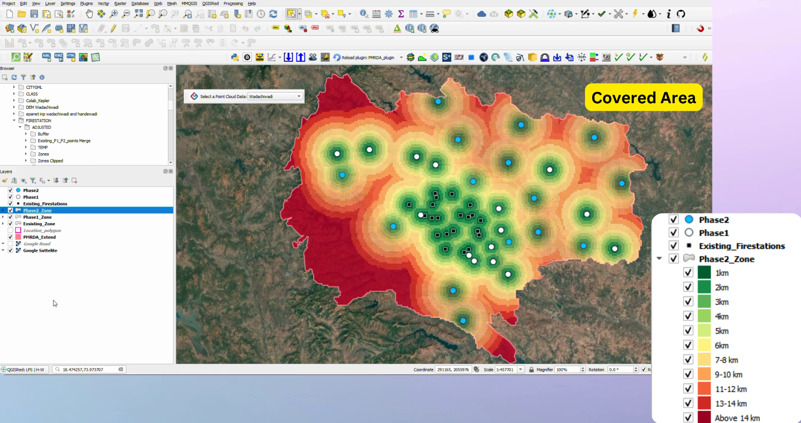

Project Overview
| Technologies Used | QGIS, Road Network Analysis, Buffer Tool, Risk Zone Mapping |
This project focused on improving emergency response by strategically identifying locations for proposed fire stations. We began by mapping the existing fire station locations and analyzing the extent of their service coverage using buffer analysis. Kilometre-wise buffers were created around each station to determine how far their response could effectively reach.
We then overlaid this with data on high-risk and danger zones to highlight regions that were outside the current coverage area. These underserved areas posed significant risks due to their distance from the nearest fire station. To address this, we identified optimal locations for new fire stations to ensure full spatial coverage.
Additionally, we considered the road network and connectivity to make sure proposed locations had efficient access routes for faster emergency response. This geospatial analysis provided a data driven approach for planning and improving disaster management infrastructure in the region.
Project Demo
